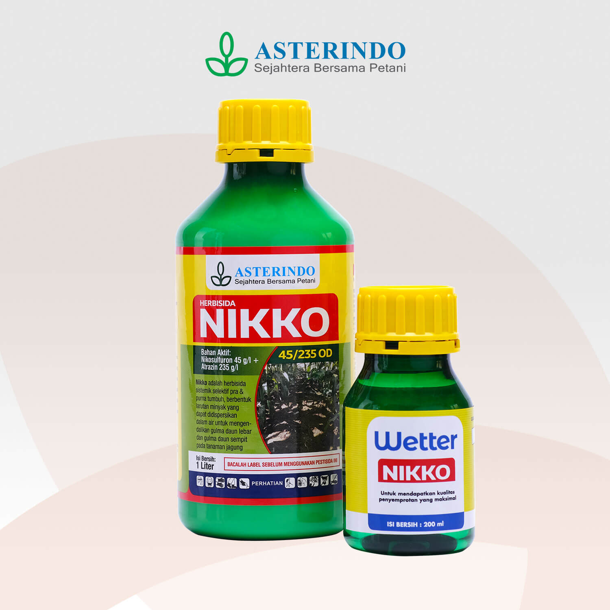

INSECTISIDA
Insektisida merupakan pestisida untuk memberantas serangga, seperti nyamuk, kecoak, kutu busuk, rayap, semut, belalang, wereng, ulat, dan sebagainya. Contoh insektisida antara lain diazinon, tiodan, basmion, basudin, propoksur, diklorovinil dimetil fosfat, timbel arsenat, dan magnesium fluorosilikat.
HERBISIDA
Herbisida merupakan pestisida untuk mencegah dan mematikan gulma atau tumbuhan pengganggu, seperti eceng gondok, rumput teki, dan alang-alang. Alang-alang dapat dikatakan sebagai hama tanaman karena alang-alang menyerap semua zat makanan yang ada dalam tanah. Contoh herbisida antara lain gramoxone, totacol, pentakloro fenol, dan amonium sulfonat.
NEMATISIDA
Nematisida adalah pestisida untuk memberantas hama cacing. Hama ini sering merusak akar atau umbi tanaman. Contoh nematisida adalah oksamil dan natrium metam.
FUNGISIDA

Fungisida adalah pestisida untuk memberantas jamur (fungi). Contoh fungisida adalah timbel (I) oksida, carbendazim, tembaga oksiklorida, dan natrium dikromat.
RODENTISIDA
Rodentisida adalah pestisida untuk memberantas binatang pengerat, misalnya tikus. Contoh rodentisida adalah warangan (senyawa arsen) dan thalium sulfat.